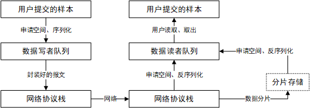

ZRDDS支持Windows XP及以上，已测试编译器：VS2008、VS2010、VS2012、VS2013、VS2015、MinGW-gcc4.4、MinGW-gcc-5.1.0、MinGW-gcc-6.3.0、Linux2.6及以上，已测试系统Ubuntu14.04、Ubuntu16.04、CentOS7.0 。VxWorks5.5以上，已测试PowerPC架构、MIPS架构、x86架构，国产操作系统方面包括：x86中标麒麟7.0、飞腾银河麒麟4.0、x86翼辉4.7.2、x86以及飞腾的ReWorks。
ZRDDS支持UDP、TCP、共享内存、RapidIO、PCIE、40G/100G高速UDP、TCP。
目前包括：ZRDDS管理监视器工具、系统设计工具、记录与回放工具、PING、SPY工具、持久化服务、WEB服务以及安全服务。
否，ZRDDS提供一系列内置的数据类型及其类型支持文件，这些数据类型包括： DDS_Char DDS_Octet DDS_Boolean DDS_Short DDS_UShort DDS_Long DDS_ULong DDS_LongLong DDS_ULongLong DDS_Float DDS_Double DDS_Bytes DDS_KeyedBytes DDS_String DDS_KeyedString DDS_ZeroCopyBytes ，使用的步骤与用户自定义类型一致。示例代码如下：
字符串在C与C++中均映射为 DDS_Char *，在C++中并未映射为std:: string，在Java中映射为 java.lang.String 。
sequence表示动态数组，sequence<T>在ZRDDS中映射为以T为参数的 ZRSequence <T>模板实例化类型，C中包括一系列的支持函数，参见 核心接口QoS相关数据类型 FooSeq ，C++中包括一些列的成员函数 参见 核心接口QoS相关数据类型 FooSeq 。
如果通信不了，应依次检查以下因素：
如果通信不了，应依次检查以下因素：
sudo route add -net 224.0.0.0 netmask 240.0.0.0 dev eth0(应修改为对应通信的那个接口名称)）?systemctl stop firewalld.service），或者开启时其策略是否允许UDP组播通过？IDL定义如下：
发送代码如下：
在发送数据时，应注意发送数据的初始化（特别是char*类型）。在上述代码中，用户由于未初始化通信数据(t_data)，导致通信数据(t_data)中的extra_mes(char*类型)成员变量为一个野指针，从而在发送数据（调用write方法）的过程中引发了无法预料的问题。 用户可以选择调用DDS提供的ShapeTypeDataInitialize方法对通信数据进行初始化，也可以自行对通信数据初始化。若用户通过ShapeTypeDataInitialize方法对通信数据进行初始化，应在销毁数据时调用ShapeTypeDataFinalize方法。反之，不需要（用户自管理申请的空间）。
IDL定义如下：
发送代码如下：
用户调用ShapeTypeDataInitialize方法初始化数据后，DDS已为char*类型的成员申请了默认大小的空间（默认大小一般为255，可在通过idl编译器编译生成数据类型文件时修改）。上述代码中，用户对成员变量extra_mes进行了二次赋值，从而导致在ShapeTypeDataInitialize方法中申请的空间无法在调用ShapeTypeDataFinalize方法时释放。该部分赋值正确的写法为：strcpy(m_data.extra_mes, "hello world");。
DataReaderListener不仅仅只会回调通知用户通信数据，还会回调通知用户状态数据（例：已匹配的对端数据写者的下线）。用户应通过SampleInfoSeq对象实例中的valid_data信息判断数据是否有效（即为通信数据），再访问数据。获取并处理数据的正确代码如下：
在使用Sequence类型变量时，可以在IDL文件中自定义其长度，例：sequence<int, 128> int_seq ，也可以使用默认的长度，即不定义长度（此时长度默认为255,使用编译器参数-sequence_bound修改），例：sequence<int> int_seq，也可以通过编译器选项-enable_unbounded中设置使用无限长度。
DDS最大传输数据长度与当前使用的通信协议和数据类型有关。DDS传输过程使用的数据类型根据是否为零拷贝可分为非零拷贝数据类型和零拷贝数据类型，零拷贝数据类型即为 DDS_ZeroCopyBytes ，除此以外的都为非零拷贝数据类型，包括DDS其他内置数据类型和用户通过IDL自定义的数据类型。非零拷贝数据类型以DDS内置的 DDS_Bytes （无符号一字节整型sequence）为例进行说明。
以下为默认配置下UDP/TCP能传输的最大数据长度，以及目前DDS能支持的最大传输长度和对应的配置。
| 默认配置 | UDP下最大传输配置 | TCP下最大传输配置 | |||
| 配置 | fragSize | 4MB | 4MB | 4MB | 4MB |
| fragMaxSize(UDP) | 65408B | 65408B | 65408B | 65408B | |
| fragMaxSize(TCP) | 2100000B | 2100000B | 2100000B | 2^31-8B | |
| fragMaxNum | 4160 | 4160 | 4160 | 4160 | |
| recvBufLen(UDP) | 0B | 65504B | 0B | 0B | |
| recvBufLen(TCP) | 0B | 0B | 2^31-4B | 0B | |
| reservedLen | 1024B | 1024B | 0B | 0B | |
| UDP最大传输长度 | 零拷贝 | 65360B≈63KB | 65452B≈63KB | 65360B≈63KB | 65360B≈63KB |
| 非零拷贝 | (65408-512)*4160-8B≈257MB | (65408-512)*4160-8B≈257MB | (65408-512)*4160-8B≈257MB | (65408-512)*4160-8B≈257MB | |
| TCP最大传输长度 | 零拷贝 | 2099952B≈2MB | 2099952B≈2MB | 2^31-4-52B≈2GB | 2^31-4-52B≈2GB |
| 非零拷贝 | 2^32-4-8B≈4GB | 2^32-4-8B≈4GB | 2^32-4-8B≈4GB | 2^32-4-8B≈4GB | |
表中用颜色标记的项目，表示的是达到目前支持的最大传输长度需要修改的配置，以及修改之后相对默认配置有所变化的最大传输长度。每个配置及其说明如下。
| 配置名 | 对应DDS配置项 | 说明 |
|---|---|---|
| fragSize | sysctl.dw.statistic.fragment_length | 数据读者发送数据时进行分片的大小 |
| fragMaxSize(UDP) | sysctl.global.net.zrnet_ipv4_udp_max_packet_length | 使用UDP协议时的单个分片大小，由用户确保收发两边保持一致 |
| fragMaxSize(TCP) | sysctl.global.net.zrnet_ipv4_tcp_max_packet_length | 使用TCP协议时的单个分片大小，由用户确保收发两边保持一致 |
| fragMaxNum | 无 | 数据读者支持的最大分片个数，目前固定为4160 |
| recvBufLen(UDP) | DDS_DomainParticipantQos.receiver_thread_config.receive_buffer_length | 接收缓冲区大小，使用UDP协议 |
| recvBufLen(TCP) | DDS_DomainParticipantQos.receiver_thread_config.receive_buffer_length | 接收缓冲区大小，使用TCP协议 |
| reservedLen | DDS_ZeroCopyBytes.reservedLength | 为底层预留的协议头空间，发送时申请空间需要加上这个长度，所以可能会影响最大传输长度 |
根据以上配置计算最大传输长度的方式如下，单位为B，字节。
| 场景 | 最大传输长度 | |||
| UDP | 零拷贝 | reservedLen == 0 | min(fragMaxSize(UDP)+4-52, 2^31-1-reservedLen) | |
| reservedLen > 0 | min(recvBufLen(UDP)-52, 65504-52, 2^31-1-reservedLen) | |||
| 非零拷贝 | min(fragSize, fragMaxSize(UDP))*fragMaxNum-8 | |||
| TCP | 零拷贝 | reservedLen == 0 | min(fragMaxSize(TCP)+4-52, 2^31-1-reservedLen) | |
| reservedLen > 0 | min(recvBufLen(TCP)-52, 2^31-4-52, 2^31-1-reservedLen) | |||
| 非零拷贝 | min(min(fragSize, fragMaxSize(UDP))*fragMaxNum-8, 2^32-4-8) | |||
UDP和TCP协议下最大传输长度具体说明如下。
UDP协议本身最大支持长度为2^16-1B，除去IP头（20B）和UDP头（8B），UDP协议本身理论可传输的最大长度为65507B。
TCP协议本身理论上没有对数据长度进行限制。
DDS传输过程使用的数据类型根据是否为零拷贝可分为非零拷贝数据类型和零拷贝数据类型，零拷贝数据类型即为 DDS_ZeroCopyBytes ，除此以外的都为非零拷贝数据类型，包括DDS其他内置数据类型和用户通过IDL自定义的数据类型。非零拷贝数据类型以DDS内置的 DDS_Bytes （无符号一字节整型sequence）为例进行说明。
DDS传输过程如图1所示，零拷贝 DDS_ZeroCopyBytes 和 非零拷贝 DDS_Bytes 在用户通信接口调用方式和支持的通信协议范围方面是一致的，两者存在差异的方面主要体现在使用规则和传输性能上。

零拷贝 DDS_ZeroCopyBytes 和 非零拷贝 DDS_Bytes 在使用规则上主要有以下几个区别。
零拷贝 DDS_ZeroCopyBytes 在通信过程的序列化、反序列化过程中通过减少数据拷贝的次数，来提升使用零拷贝 DDS_ZeroCopyBytes 进行通信时的传输速度，因此在通信协议自身保证可靠的前提下，建议优先使用零拷贝 DDS_ZeroCopyBytes 进行通信。